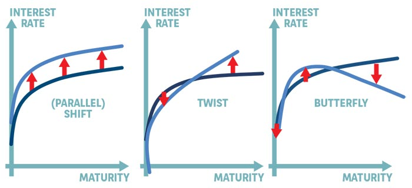

So this is an interesting post. It treats some financial model for fixed income instruments.
At school, back in the days you simply treated the standard duration/convexity and simpler refined models thinking in terms of key-rate duration etc.
I never specialized in fixed income instruments during my studies. More on volatility models, general econometrics and derivatives if any. So it makes sense that the models you checked at in the more general non-specialized modules, were quite general.
Now working in an insurance you understand well that fixed-income instruments take the lion position.
Hence, more specialized models are used in order to price the risk of such fixed-income instruments.
Here some notes to understand the things in this sense in a better way. The general idea is to use fixed-income attribution models as in the following entry.
So what these models do is to decompose the risk of fixed-income instruments in different components. You would then price the different components and ultimately aggregate the risk of them.
So I will start in this post with the interest rate risk. I will then check at other risk-factors as I go along.
So the yield-curve and interest rate risk is just one among the many factors. However, this is an important one.
Note that if you use your standard duration models you can perform analysis of the risks for the case of parallel movements of the yield-curve.
What happens though in the case of other more non-linear movements? There you have to think in terms of different models that can capture such shifts.
This is the reason why you can use factor-based models for the interest reate curve that capture such non-linearities.
A typical decomposition in this sense is the:
decomposition.
So note that the butterfly acts more on the curvature of the yield curve hitting in multiple points.
In contrast, the twist is more acting on the first-order level changing the steepness of the yield curve but holding the general curvature structure. Note that by definition changing the twist will affect the curvature, and having a butterfly will affect the steepness of the curve. The two are therefore not completely isolated. Would be fun at some point to read more into the mathematical relation of the two but as having enough things on your plate this is jumped at the moment - and likely forever.
Once you have a factor model for the yield-curve taking into account the three elements and mapping the influence of each on the yield curve you can start to make all of your scenario based on it.
The simple idea as in the Nelson-Siegel model is the following:
-> you have your observable yield curve and the given interest rates at different maturities composing the curve.
-> you have a function composed of constants terms (measuring shifts), first order terms (measuring twist) and more complex terms (measuring butterfly).
You then parameterize the influence of each term in order to get the best possible representation of the current yield curve (standard OLS / minimization exercise).
Once you found your parameteric representation of the yield curve depending on that factors you can make your standard sensitivities analysis by standard math-analysis arguments.
I.e. you can generate the simulations for the different terms tweaking your yield curve. Based on the simulation of these few terms you are actually generating possible simulations of the yield curve. This because what you actually have is a model for the entire yield curve based on the simple shift-twist-butterfly terms. Given the parameterization of the effect of each you then have a new simulated state for your yield curve that you can use to price your fixed interest rate instruments.
Important side note: Note that the above is a simplified explaination of the model. In the models you actually have two kind of parameters. Paramters defining the influence of each shape term on the yield curve and decay factor parameters defining the location of the "humps" of the butterfly terms. But the main idea stays and you can easily understand how it works even with these terms.
So this is a little bit the logic you reason with in the market risk model for capturing the interest rate risk.
TODO: Understand the basic reasoning behind credit spread risk.n
TODO: Understand the basic reasoning behind swap spread risk.